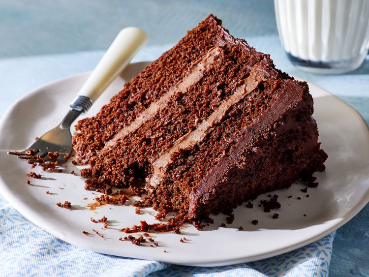

Home
Blackout cake

Description
Blackout cake is a moist and tender cake with deep cocoa flavor.
Layers of chocolate cake are filled with light and airy chocolate pudding,
then all of this goodness is enrobed in a rich chocolate ganache.
This is a dream dessert: chocolate on chocolate on chocolate.
Ingredients
Cake
- Cooking spray
- 2 1/4 cups all-purpose flour
- 1 3/4 cups white sugar
- 1 cup unsweetened cocoa
- 2 teaspoons baking powder
- 1 teaspoon baking soda
- 3/4 teaspoon kosher salt
- 1 cup whole buttermilk, at room temperature
- 3/4 cup canola oil
- 3 large eggs, at room temperature
- 1 tablespoon vanilla extract
- 1/2 cup hot strong brewed coffee
Filling
- 1 (3.9-ounce) package chocolate instant pudding and pie filling
- 2 1/2 cups heavy cream
Frosting
- 2 cups semisweet chocolate chips
- 3/4 cup unsalted butter, cut into pieces
- 1/2 cup heavy whipping cream
- 1 tablespoon vanilla extract
- 1/2 teaspoon kosher salt
Steps
- Gather all ingredients.
- For the cake, preheat the oven to 350 degrees F (180 degrees C). Coat 3 (9-inch) round cake pans with cooking spray; line bottoms of each cake pan with parchment paper, and spray parchment lightly with cooking spray. Set aside.
- Whisk together flour, sugar, cocoa, baking powder, baking soda, and salt together in a large bowl until no lumps remain.
- Combine buttermilk, canola oil, eggs, and vanilla in the bowl of a stand mixer fitted with a whisk attachment. Beat on medium-low speed until combined, about 30 seconds. Reduce speed to low, and gradually beat in flour mixture until just combined, 1 to 2 minutes, stopping to scrape down sides of bowl as needed. With mixer on low speed, slowly stream in hot coffee, beating until just incorporated, about 1 minute. Divide batter evenly among the prepared cake pans, about 2 cups each.
- Bake in the preheated oven until a wooden pick inserted in the center comes out with a few moist crumbs, about 18 minutes. Let cakes cool completely in cake pans on a wire rack, about 45 minutes.
- While cake cools, prepare filling: Whisk together pudding mix and heavy cream until mostly smooth and slightly thickened, about 2 minutes. Chill, covered, until fully set, about 30 minutes.
- Meanwhile, prepare frosting: Microwave chocolate chips, butter, and heavy cream in a large microwave-safe bowl on High in 30-second intervals, stirring thoroughly between intervals, until smooth and melted, about 1 minute 30 seconds to 2 minutes. Chill, covered, until partially set but spreadable, 25 to 30 minutes.
- To assemble, remove cooled cakes from cake pans, and discard parchment paper. Slightly trim tops of each cake layer to create a flat surface, and transfer trimmings to a large bowl. Using your hands, break up cake trimmings into fine crumbs, and set them aside (you should have at least 1 1/2 cups crumbs). Place 1 trimmed cake layer, top side up, on a plate or cake stand.
- Remove set filling from the refrigerator, and whisk lightly until completely smooth and slightly loosened. Top cake layer with half (about 1 1/2 cups) of filling; spread to edges of cake in an even layer using an offset spatula. Top with second cake layer, top side down, and repeat the process with remaining filling. Top with third cake layer, top side down.
- Stir chilled frosting until smooth. Using a large offset spatula, spread frosting evenly over the top and sides of the cake.
- Gently press reserved cake crumbs evenly over into frosting, covering the top and sides completely. Discard any remaining crumbs. Slice and serve!